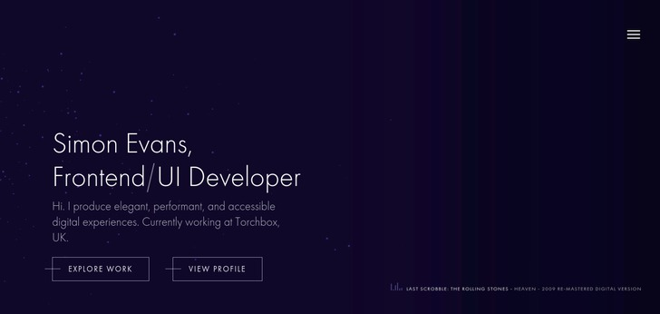
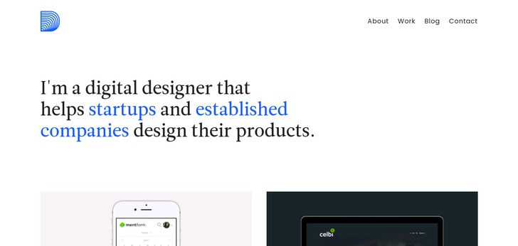

Portfolio
Portfolio 1
Written by McAfee, a principal research scientist at MIT, this blog is an exploration of the intersections between business and IT...Portfolio 2
Written by McAfee, a principal research scientist at MIT, this blog is an exploration of the intersections between business and IT...Portfolio 3
Written by McAfee, a principal research scientist at MIT, this blog is an exploration of the intersections between business and IT...

Portfolio 4
Written by McAfee, a principal research scientist at MIT, this blog is an exploration of the intersections between business and IT...Portfolio 5
Written by McAfee, a principal research scientist at MIT, this blog is an exploration of the intersections between business and IT...
